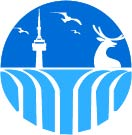
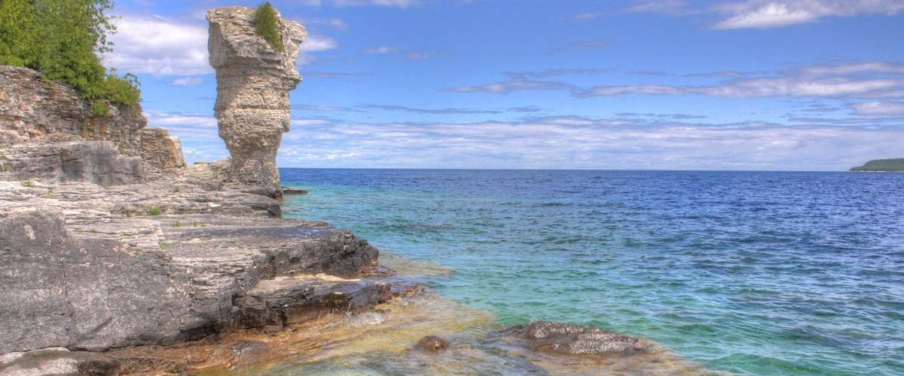

Enjoy the Ontario Summer
Tourism
This ministry works closely with the tourism sector to help stimulate economic growth and investment and create an environment that allows Ontario to compete successfully in the rapidly changing world of travel and leisure. Among our activities to strengthen Ontario as an internationally-recognized tourist destination:
- 1. We market Ontario as a tourist destination.
- 2. We work with industry and organizations to support the maintenance and growth of the tourism's economic contribution.
- 3. We undertake vital market research in the areas of marketing,product development, and investment to aid business decisions by both governments and industry.
- 4. We encourage private sector investment and new product development to expand Ontario's tourism sector and promote egional tourism economic development.
- 5. We support and facilitate the development of new experiences and destinations.
- 6. We invest in Ontario's tourism agencies.
@CopyRight 2020 The Ontario Tourism Company, Inc
-
Follow us on social media.